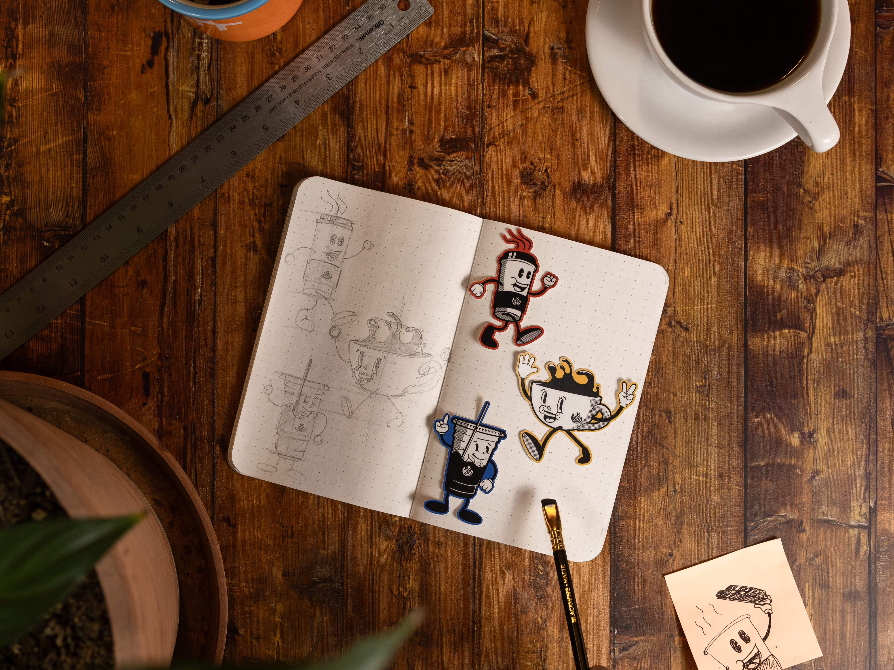
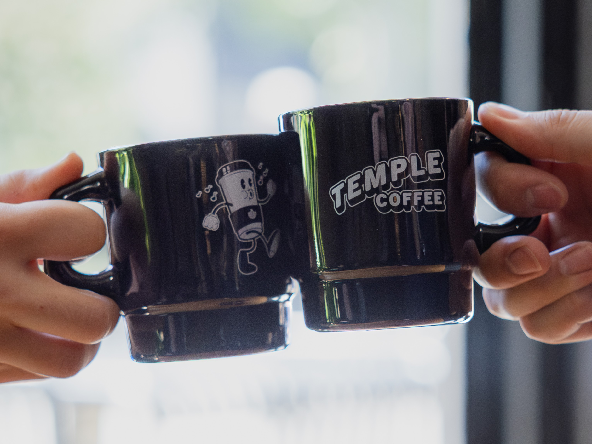
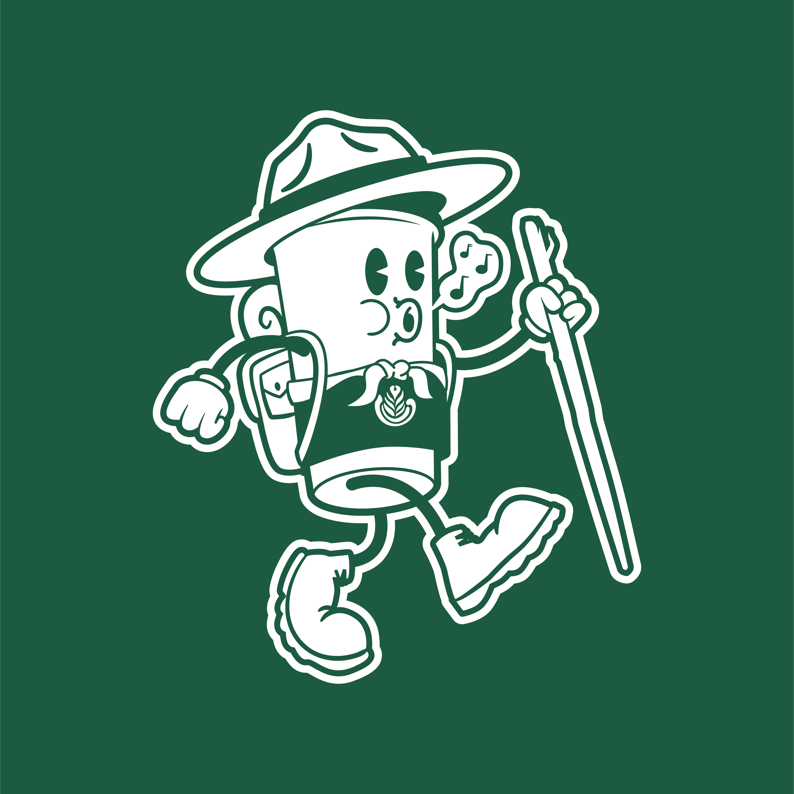
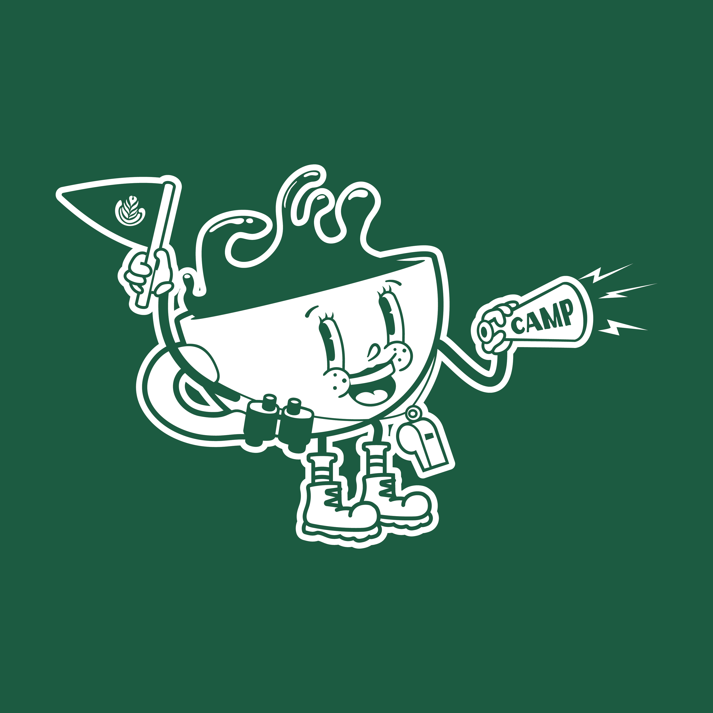
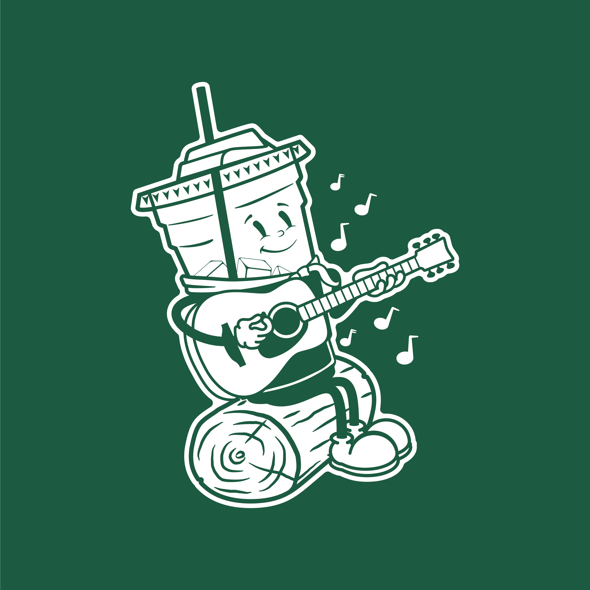

Temple Coffee Roasters · Ongoing
Character & Illustration System


Origin
The characters started as an idea for a small sticker series, with no plan beyond that. They grew on their own into a recurring cast that now shows up across nearly every part of the brand.
Each character is built around one of Temple's actual drinkware formats. Templeton is the iconic to-go cup: white cup, black lid, black sleeve, and the character who has appeared the most across releases, to the point of becoming something close to an unofficial mascot for Temple itself. Sunny is the cappuccino cup, and has also appeared as a matcha cup on occasion, which worked especially well for a Halloween sticker where the green matcha read naturally as a witch. Buzz is the iced to-go cup, rounding out the cast.
System
The design system keeps each character's base identity constant, their cup, their silhouette, their core colors, while allowing them to be reskinned for seasonal releases and events. That balance is what makes the characters durable: recognizable enough to build loyalty over time, flexible enough to stay interesting release after release.
The reskins are also tied directly into Temple's menu. Costumes and props for each character are often built around the name and concept of an actual seasonal drink, so the illustration work doubles as menu marketing.
Halloween
Templeton

Reskinned as a skeleton for the seasonal Halloween sticker release.
Sunny

Appeared as a witch, using her occasional matcha-cup form so the green played naturally into the costume.
Buzz

Rounded out the trio as a vampire.
Summer Camp Menu
Templeton, "Classic Adventurer"

Styled after the Classic Adventurer drink: handkerchief, hiking stick, backpack and bedroll, a Smokey Bear style hat, and hiking boots.
Sunny, "Camp Counselor"

Styled after the Camp Counselor drink: a pennant flag in one hand, an old-school acoustic megaphone in the other, binoculars on her hip, striped socks, and hiking boots.
Buzz, "Campfire Sing-Along"

Styled after the Campfire Sing-Along drink: seated on a log playing an acoustic guitar, wearing a handkerchief and a garrison cap.
Beyond Merch
The characters have also been used for coloring pages and crayons at special events like café grand openings, giving the system a role beyond retail: introducing the brand to younger customers and families in-store.
Result
Customers grew to know the characters by name. Sticker releases and the mug line built around them sold through quickly, and customers were spotted visiting multiple of Temple's nine cafés trying to track down mug stock. What started as a small sticker idea is now one of the most recognized parts of the brand.
Gallery
Next project